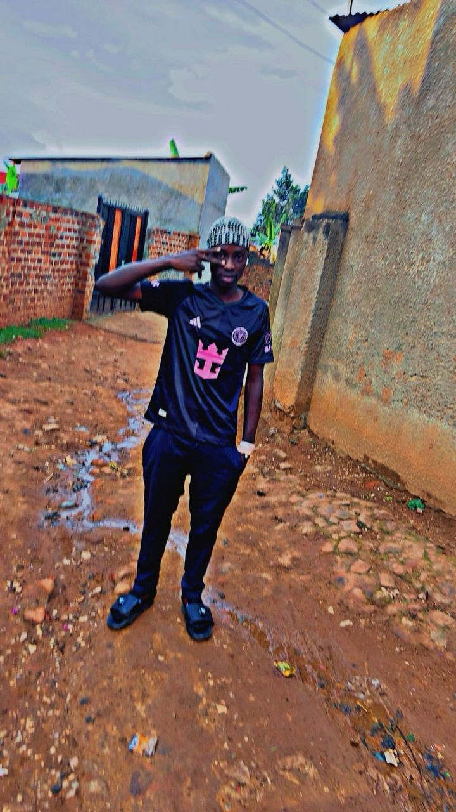

Home
Course Overview
Welcome to WDD 231: Web Frontend Development I. This course emphasizes building responsive, accessible, and user-friendly websites using HTML, CSS, and JavaScript. You'll learn to create dynamic and interactive web pages while adhering to modern web standards and best practices.
About Me
Hi, I'm Ashely Okaka, a 20‑year‑old web developer from Kampala, Uganda. I love turning ideas into accessible, fast experiences and exploring how technology can strengthen local communities. When I'm not coding, I dig into UI design systems and small civic tech projects that make everyday life simpler.
Student Number: 30017479
Student Photo
Current Courses
Total Credits: 0